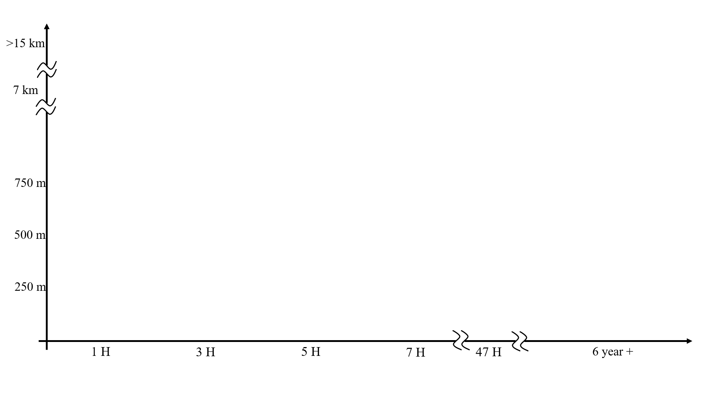

Data Fusion
Across science and engineering, innovation is increasingly driven by sophisticated and expensive data collection technologies. At the same time, vast amounts of already available data remain systematically underexploited. This is often justified by assumed limitations in accuracy, assumptions that are frequently made before the full potential of modern data fusion methods is explored.
Large-scale data streams are generated continuously in transportation systems. Loop detectors, probe vehicles, and other fixed roadside sensors operate daily, at scale, and at low marginal cost. My work in data science and traffic operations is motivated by a simple but powerful premise: the value of existing data can be fundamentally expanded through intelligent fusion, inference, and reconstruction methods.

A central challenge in traffic analysis lies in the reconstruction of vehicle trajectories, particularly when both longitudinal motion and lateral (lane-changing) behavior are of interest. While longitudinal dynamics have been studied extensively, lane-changing maneuvers remain comparatively underexplored. The primary reason is data availability: lane-accurate trajectories are typically obtained through video-based systems, which are expensive, spatially limited, and temporally short-lived. Well-known datasets such as NGSIM and HighD are highly limited in coverage; they provide valuable insights, but at substantial financial and operational cost. Large-scale initiatives like I-24 Motion and DLR-HT provide several hours and kilometers of coverage, but they are even more costly.
In contrast, conventional traffic sensors, especially inductive loop detectors, are deployed ubiquitously and operate continuously. These data sources are traditionally considered insufficient for lane-level trajectory analysis. My data fusion projects demonstrate that this limitation is not inherent to the data itself, but rather to how it is processed. The animation below compares a short list of widely known trajectory datasets with the resulting dataset from my project, TAILOR, highlighting differences in spatial coverage and temporal extent. Beyond these well-known examples, a recent multi-institutional literature mining study (which I contributed to) systematically reviewed and categorized 100+ vehicle trajectory datasets and data collection initiatives.

I introduced two data fusion and large-scale data mining methods that enable the approximation of vehicle trajectories, including lane-changing maneuvers, using conventional roadside sensor data at near-zero additional cost. These methods leverage individual vehicle cross-sectional observations and reconstruct continuous trajectories over extended spatial and temporal horizons.
The resulting dataset and framework, TAILOR, represents a shift from active, infrastructure-heavy data collection toward a passive, scalable, and cost-effective trajectory reconstruction paradigm. As long as individual vehicle detections are available, the approach supports sustained trajectory reconstruction over corridors, networks, and time periods defined by project needs rather than by data collection constraints.
TAILOR enables lane-level behavioral analysis at a scale that was previously impractical, opening new possibilities for traffic safety analysis, operational modeling, and data-driven decision support, without reliance on costly and temporary sensing campaigns.